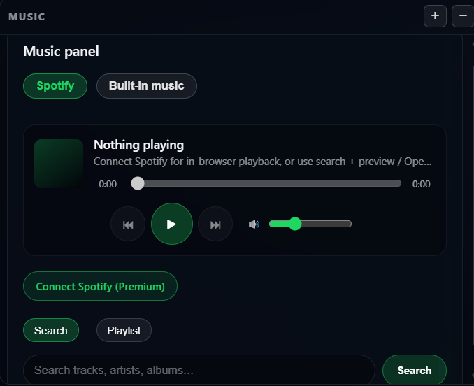

Music panel

Use this panel to control background music while you work (either through buttons or commands).
Common commands
- “Pause the music”
- “Can you play the next/previous track”
- “Play the lo-fi mix”
- “Turn the volume up”
- “Turn the volume down”